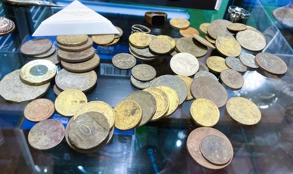

Welcome to the exciting world of Metal Detecting
The Brisbane Metal Detecting Club Inc. (the Club) is a not-for-profit community service organisation for those interested in metal detecting. The club supports detectorists who love to search for coins, jewellery, relics, and gold. Our membership while mostly from Brisbane, has grown to include residents from all over Queensland.
Our members include those new to this great hobby as well as those with decades of detecting experience across Australia and overseas. Some of our members are professional prospectors. It does not matter if you are a beach detectorist or search for the illusive Australian gold nugget, the Club hosts regular activities and trips to cater for all detecting interests.
Metal detecting is a great way to enjoy the outdoors and to motivate you to enjoy parts of Australia that you probably would never otherwise visit. The best part is that you can unearth treasures that would otherwise never see the light of day.


Australia has a long history of producing commemorative coins. This first began in the era of the pre-decimal coins and then after 1966 when Australia swicthed to decimal coins as legal tender.
I have been collecting coins for most of my life, often finding pre-decimal coins while pursuing my other hobby of metal detecting.
I've had an interest in programing languages since I undertook my Science Degree. During my studies, I took units in programing and the coding language taught was Pascal.
Years later, I took and interest in electronics using a Rasberry Pi and learnt to code in Python to make a few projects.
While managing a small manufacturing company, I designed the workings of the companies webpage, and the content for that webpage. The content and how the webpage would work was given to a web developer to build the webpage.
See:
Tong Metal